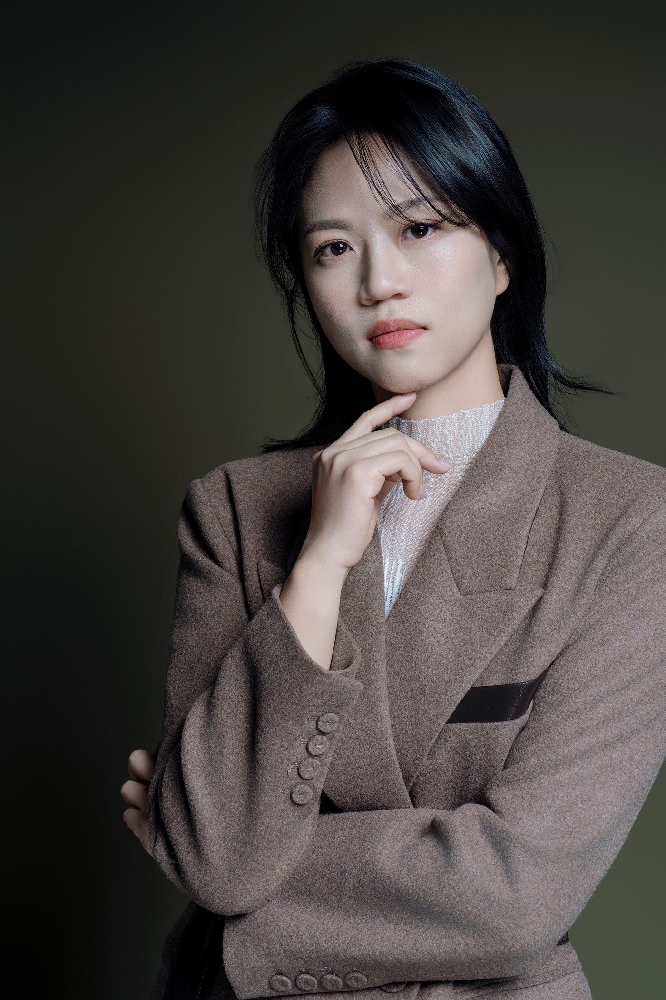

每一位講師，都認真準備台上的九十分鐘。卻常忘了：在那之前，有一場你不在場的審查，已經先開演了。
人資把三位候選講師的簡介並排給主管挑、公開班學員滑過報名頁決定要不要點進去，這些時刻你都不在場。替你上場的，是你的照片。
你還沒上台，照片已經先進入提案了。問題只在於，它替你說了什麼。
邀課的第一輪，發生在你不在場的時候
企業內訓的流程是這樣走的：承辦人蒐集講師名單、把簡介與照片貼進簽呈、往上呈給主管拍板。主管沒聽過你的課、多半也沒時間細讀你的經歷，他看到的，是一張照片加三行字。那張照片要在幾秒內替你回答：這個人站得住台嗎？值這個鐘點費嗎？請他來，我還得幫他背書嗎？
公開班也是一樣。轉換率同時受題目、定價、口碑、文案與流量來源影響，講師照不是單一原因，但它會跟這些一起構成報名頁的第一印象。它不該成為專業被理解之前的阻力。
承辦人把你的簡介照貼進簽呈的那一刻，你的第一堂課已經開始了，只是你不在場。
講師照片被讀的，是三個沉默的問題
講師這個角色的特殊之處：你賣的不是商品，是「一段值得全場專注的時間」。所以照片被審視的重點，和一般大頭照完全不同：
- 你適合帶誰？姿態與眼神要能承接目光。畏縮的肩線與閃躲的視線，會讓人不容易想像你站在那群人面前的樣子。
- 你教什麼？服裝與氣質要對齊你的專業題目。教財務的講師與教創意的講師，「專業」長得不一樣。
- 能承接什麼場？一對一顧問、企業內訓、工作坊、大型演講，需要的影像證據不一樣。而一張手機隨拍配在八萬的課程提案裡，兩邊給的訊號本身就是矛盾的。
一張不夠：講師形象的三層部署
講師的曝光場景比多數職業更多元，一張照片打天下是不夠的。我們建議至少備齊三層，各有任務：
| 照片類型 | 用在哪裡 | 要傳遞什麼 |
|---|---|---|
| 講師形象照（半身、正面信任） | 企劃書簡介、報名頁、手冊、名片 | 可信、專業、看得出領域氣質 |
| 授課情境照（動態、與學員互動） | 官網、社群、課程介紹頁 | 台風、感染力、「這堂課有畫面」 |
| 場域與規格照（現場全景） | 演講邀約、媒體、年度簡報 | 你實際在哪些規模與形式的場合工作過 |
三層合起來才是完整的講師敘事：形象照讓人認得你，授課照讓人理解你怎麼帶，場域照證明你實際在哪些情境工作過。這三層不必一次拍齊，也不需要為了看起來有規模而製造不存在的舞台。

講師最容易漏掉的，不是張數，是版位
很多講師拍完一組照片才發現，每一張都是人物置中、背景塞滿，放進海報或簡報時完全沒有位置可以下標題。
所以拍之前要整理的不只是造型，還有這組照片未來會出現在哪裡。一組真的堪用的講師素材，通常要同時顧到：可以裁成正方或圓形的頭肩照（個人檔案、講師名單）、直式人物照（社群、講師卡、活動海報）、橫式留白照（課程頁、簡報封面、媒體橫幅）、帶動作的全身畫面（主視覺、大圖輸出），還有不同表情與視線方向，讓文案和版面有調整的餘地。
拍得好只是及格，拍的時候有沒有替後面的版位留位置，才決定這組照片能用多久。照片為什麼常常沒被用上，〈拍完形象照之後〉講得更完整。
先定位，再進棚：CHUN.EN 怎麼做講師形象
拍之前，我們會先問一個多數講師沒被問過的問題：你要被記住的，是你的哪一面？是嚴謹的專家、犀利的教練，還是溫暖的引導者？
定位不同，服裝的正式度、妝髮的收放、鏡頭前的姿態引導，全都不一樣。妝髮的強度不該由性別決定，該看的是燈光、鏡頭距離、授課場域與個人輪廓（B.room 在這裡處理的是鏡頭下的輪廓與精神狀態，不是把妝畫濃）。定了，影像才知道三層照片各要往哪裡打。
台上的功力要靠累積，但台前的信任可以先設計。把照片準備好，讓每一次「你不在場的審查」，都有一張照片替你先站好那個位子。
最後，換你當一次承辦人
打開你最近一次課程提案裡的那張簡介照，用承辦人的眼睛看一眼：
這位講師的課，你會買單嗎？